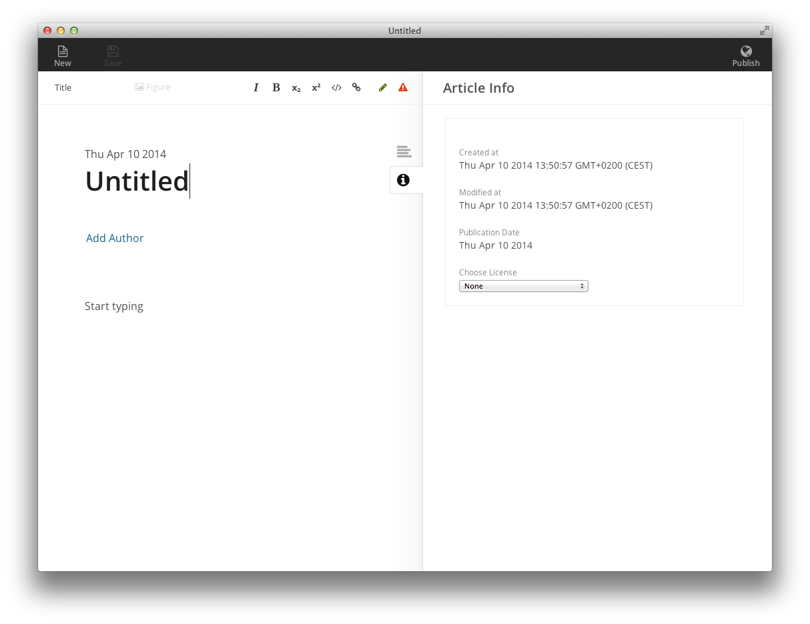
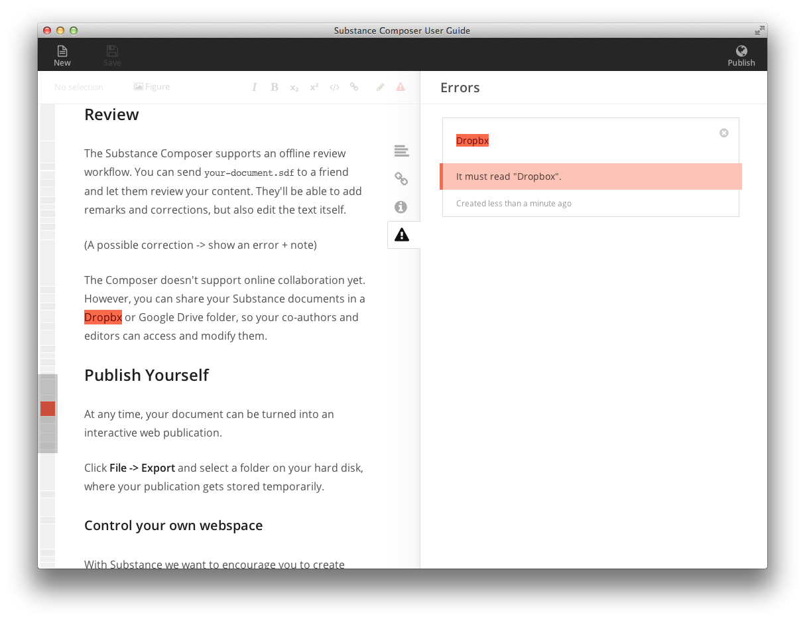
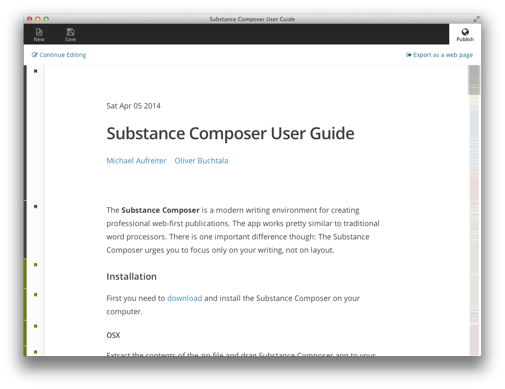
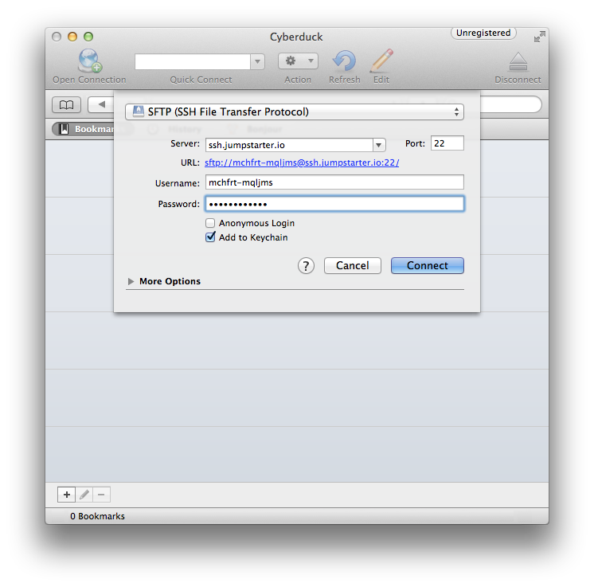

Tue Apr 08 2014
The Substance Composer is a modern workspace for creating professional web-first publications. The app works pretty similar to traditional word processors. There is one important difference though: The Substance Composer urges you to focus only on your writing, not on its layout.
Installation
First you need to download and install the Substance Composer on your computer.
OSX
Extract the contents of the zip file and drag
Substance Composer.app to your Applications folder.
Windows
Windows version will be available soon.
Linux
Linux version will be available soon.
Your first Substance article
Open the Substance Composer. You should see a blank document.

A blank Substance document
Move around the cursor using mouse and arrow keys and enter text as you would expect it.
Emphasize your text
We provide a limited set of annotations to emphasize your content with different semantics. Use the annotation toolbar on the uper right of the content panel to do so.
Add structure
Use the text transform tool on the upper left to turn a paragraph into a heading in order to structure your document. To change the level of a heading you can also use TAB and Shift+TAB keyboard shortcuts.
Add figures
Click the Figure button in the toolbar which shows a file select dialog. Pick the image you want to add and confirm. The image will be attached to the document. We don't have any restrictions on the size of the image. Just make sure your images aren't too large, so they load fast enough on the web.
Add remarks
You can easily add remarks and errors by clicking the toggles on the top right of the content toolbar.
Review
The Substance Composer supports an offline review workflow. You can send
your-document.sdf to a friend and let them review your content. They'll be able to add remarks and corrections, but also edit the text itself.

An error annotation highlighting a typo
The Composer doesn't support online collaboration yet. However, you can share your Substance documents in a Dropbox or Google Drive folder, so your co-authors and editors can access and modify them.
Publish Yourself
At any time, your document can be turned into an interactive web publication. Click the Publish button on the top right to see a preview.

The Publish shows a preview of your final web publication.
Click Export as a web page in the Publish dialog or use File -> Export. Select a folder on your hard disk, where your publication gets stored temporarily. Use a web-compatible name without spaces and special characters (e.g.
my-first-substance-article would be a good one).
Control your own webspace
With Substance we want to encourage you to create your own webspace on the Internet where you can put your writing. Today, it is tempting to use hosted services, which are convenient to use. However, by using these 1-click publishing services, you also loose control about your data and give up a fair bit of freedom. If you do not have a webspace yet, we can recommend using jumpstarter.io (it's free for low traffic sites). Watch out for local independent hosting providers in your area, and help keep the Internet equally distributed. After all, any webhosting service works, the choice is on you.
Upload using SFTP
First connect to your webspace:

In Cyberduck's connection dialog select SFTP, enter your webspace's credentials and hit Connect.
Once connected you can upload your publication.

In Cyberduck just drag and drop the folder on the application to upload.
Finally you should be able to access your publication on the web on
http://you.your-webspaceprovider.com/your-publication.
Known issues
In rare conditions there is the possibilty that the displayed content gets out of sync with your input. However, if the Composer starts behaving funky, please first save your article ⌘+S. Then press ⌘+R which reloads the interface. Also, if you can reproduce the error, please send a bug report to support@substance.io. We'll try to address them as soon as possible.
Frequently Asked Questions
How can I help make the Substance Composer better?
Use it extensively. Create and host publications. Tell us what you like and what . While the Composer can't cover all usecases we have a very open ear to your feedback. If you can afford it, make a little donation to support the development of the app. We accept Paypal (contribute@substance.io) and bank transfers. Ask for our bank details at info@substance.io.
Can I customize the output?
You can adjust the CSS (
style.css) and HTML (index.html) to style your publication differently. Just be aware that your custom stylesheet gets overriden once you export an updated version to the same folder. Soon designers will be able to create templates for the Composer, automating this process.
Authors


Supplements
Download this article to read offline, add personal notes and even edit.
Just make sure to install the Substance Composer on your desktop.
Just make sure to install the Substance Composer on your desktop.
Copyright
Copyright © 2014
Michael Aufreiter, Oliver Buchtala
This article is distributed under the terms of the Creative Commons Attribution License, which permits unrestricted use and redistribution provided that the original author and source are credited.
See Creative Commons Attribution.